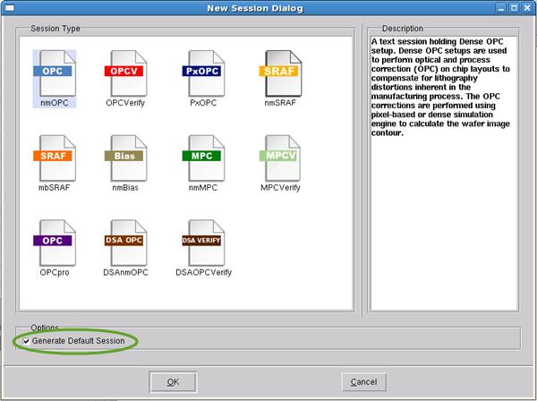

Sessions correspond
to running one of the Calibre RET tools. A flow consists of a set
of sessions. Although it is more typical to extract sessions from
an SVRF rule file, you can also create sessions with no previous
setup file.
Restrictions and Limitations
Some sessions may not currently
support all functionality of the related tool in this release.
Prerequisites
Some tools may require you to
have an existing command file, setup file, or SVRF file to properly
configure the session.
Procedure
- Invoke Calibre WORKbench or
Calibre LITHOview and open the RET Flow Tool ().
- In the RET Flow Tool, create
a flow by selecting one of the following options from the File menu. Depending on your
choice, you may need to navigate to a file location.
Table 1. RET Flow Tool Flow Creation Options (File
Menu)Option
|
Description
|
|---|
New RET Flow
|
Creates a new Untitled_Flow
folder in the RET Flow list.
|
Open RET Flow
|
Opens a previously-created
RET Flow via a file navigator.
|
Extract from SVRF
|
Opens a specialized navigator
that lists layer output rules in a SVRF rule file. You select the
rules to import.
See “Extracting a Setup File from SVRF” for more information.
|
Extract all from SVRF
|
The RET Flow Tool imports
all the rules it recognizes without prompting the user.
See “Extracting a Setup File from SVRF” for more information.
|
Extract from Transcript
|
Opens a specialized navigator
that reads the rules from a transcript generated by a previous SVRF
run.
See “Extracting a Setup File from a Transcript” for more information.
|
Extract all from Transcript
|
The RET Flow Tool reads
the transcript and imports all the rules it recognizes without prompting
the user.
See “Extracting a Setup File from a Transcript” for more information.
|
- Rename the new flow by right-clicking
its name in the list and selecting Rename.
- The Extract menu options automatically create
sessions from the source file. However, if you used the New RET Flow option, you must
create a session.
Add a session to the flow by
selecting one of the following options from the File menu or the popup menu
that appears when you right-click a flow.
Table 2. RET Flow Tool Session Creation OptionsOption
|
Description
|
|---|
Add New Session
|
Brings up the New Session
Dialog (Figure 1).
Select one of the session types from the list. If
you select the Generate Default Session check box, the session is
pre-populated with a standard template. Otherwise, the new session
is added with its data fields empty.
|
Add Existing Session
|
Loads a previously-saved .lsf file
to re-create the session.
|
Add Existing Setup
|
Loads a previously-created
setup (.in)
file. The RET Flow Tool creates a session that most closely resembles
the contents of the setup file.
|
Figure 1. New Session Dialog
- Configure the new session
using one of the session tasks in the Related Topics.